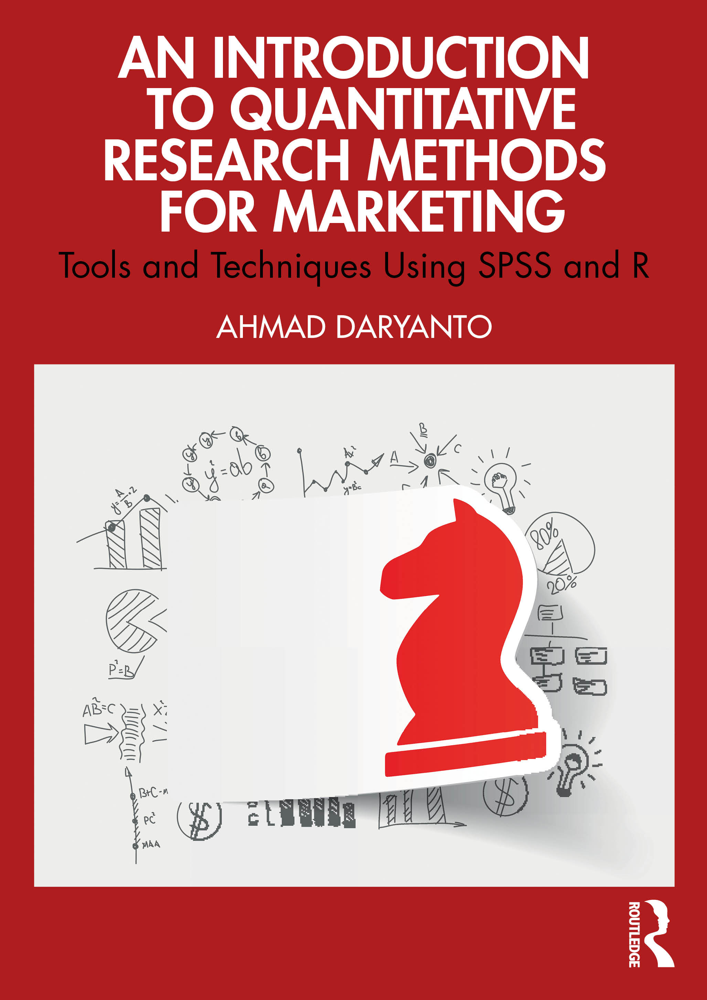

MKTG212 Labs
Preface
This is a website for the workshops of MKTG212 (Quantitative Methods).
The Team
Module leader: Professor Ahmad Daryanto
Tutor:
SPSS Version
We use SPSS version 30, which can launch from Apporto app located on the Moodle page of the course. The lab notes used SPSS version 28. Therefore, the output formats of SPSS 30 might be slightly different from those of version 28 but so far, I have not detected any differences!
Workshop Materials
SPSS data can be downloaded from Moodle
Textbook
Any marketing research or quantitative research textbook can be used to support your learning, in particular, I recommend the following text:

Malhotra, NK. (2014), Essentials of Marketing Research, London: Pearson. An excellent text covering both qualitative and quantitative aspects of Market Research. A valuable text well worth adding to your library. Malhotra wrote several textbooks on marketing research. This textbook is one of his finest.

Daryanto, Ahmad. (2025), An Introduction to Quantitative Research Methods for Marketing: Tools and Techniques Using SPSS and R, 1st Edition, Routledge. This book is written by yours truly. It will be useful for those who wants to learn SPSS in more depth and R. As stated in the publisher website, this is “a very applied text designed to make this complex subject accessible to students with no background in quantitative methods, this book is valuable recommended and core reading for advanced undergraduate and postgraduate.” If your laptop is connected to the university’s eduroam network, the book can be accessed via ProQuest Ebook Central or OneSearch.
Overview
Workshop 1. Getting started with SPSS
Tasks: In this workshop, we will label variables, create new ones, and code scales.
Workshop 2. Descriptive statistics, graphs and charts in SPSS
Tasks: In this workshop, we will use SPSS to produce descriptive statistics, graphs and charts for different types of variables.
Workshop 3. Crosstabs and two independent samples t-test
Tasks: This is the first of the bivariate analysis workshops. Here we will look at the analysis of 2 sets of nominal data in a cross tabulation and use a Chi-square test to determine whether a significant difference between the groups has occurred. In the second part of the workshop, we will look at the analysis of mean scores, i.e., comparing mean scores of two groups with two independent samples T-test.
Workshop 4. ANOVA and Experimentation
Tasks: Here we will use SPSS to compare the mean scores of two or more nominal groups. Using one-way ANOVA, we will determine if significant differences exists between two groups or more. Then we will look two-way ANOVA, specifically a 2x3 ANOVA between-subject design.
Workshop 5. Regression
Tasks: Using correlation we will determine the nature of the association between two sets of interval or ratio data. Then using linear regressions, we will develop a model to examine the influence of a set of independent variables on one dependent variable.